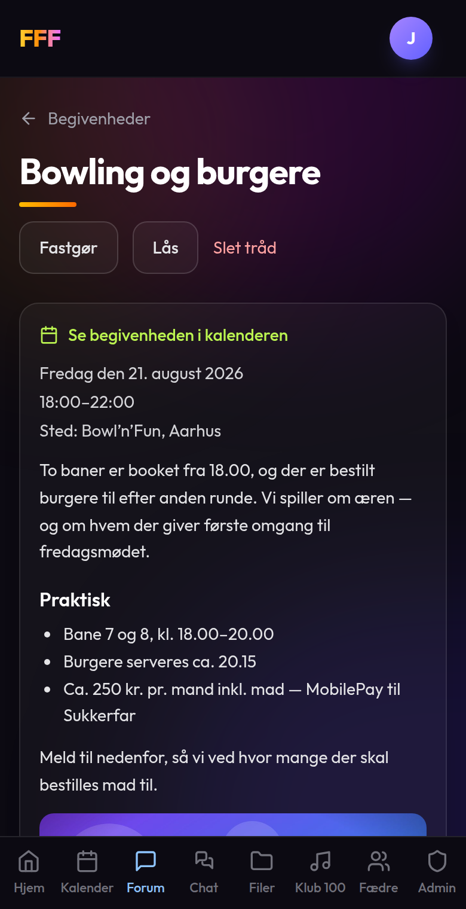

FFF — kom godt i gang
Vores eget klubhus: kalender med tilmelding, forum, chat og filarkiv. Lukket for alle andre end os. Her er det vigtigste på fire sider.
Log ind
Du får en e-mail og en startadgangskode af Farmand. Log ind én gang — telefonen husker dig derefter. Skift adgangskode under Din profil, som du finder på avataren øverst til højre.
Forsiden er indgangen til det hele. Tallet i hjørnet af et kort er det du ikke har set endnu, og “Nyt siden sidst” nederst samler den seneste aktivitet ét sted.


Kalender
Se hvad der sker — og meld til- Prikker viser dagene med noget i kalenderen. Grøn er en fast tradition, gul er en ad hoc-begivenhed.
- Hver begivenhed har tre knapper: Deltager, Deltager måske, Deltager ikke. Alle kan se hvem der kommer — så ved vi hvor mange der skal købes ind til.
- Faste begivenheder — fredagsmøde, sommerfest, julefrokost — oprettes én gang og gentager sig selv.
- Hver dato i en fast begivenhed har sit eget indhold og sine egne felter: Vært, Tema, Madansvarlig, Dagsorden.


Forum
Det der skal kunne findes igenChatten ruller væk; forummet bliver stående. Sektionen Begivenheder laves automatisk og har en tråd til hver eneste begivenhed i kalenderen — så snakken om bowlingturen ligger sammen med selve bowlingturen, med tilmelding øverst.
De øvrige sektioner er helt almindelige: opret en tråd, og svar på den. Du kan skrive med overskrifter og punktopstilling og hænge billeder og filer på — de havner samtidig i filarkivet.


Chat
Den hurtige kanal- Kanaler i stedet for én stor gruppe — Alle, Fredagsbar og en lukket kanal for bestyrelsen.
- Reaktioner: giv en 👍 uden at fylde tråden med “haha”.
- Afstemninger: “Hvornår holder vi julefrokost?” med ét tryk pr. mand.
- Begivenhedskort: del en begivenhed fra kalenderen med en Tilmeld-knap.
- Ulæst-tal på kanallisten, så du kan se hvor der er sket noget.


Og desuden
- Filer — vedtægter, referater og billeder ét sted. Hver begivenhed får sin egen mappe.
- Fædre — alle i gruppen med en kort bio og bestyrelsens titler.
- Klub 100 — vi bygger festmixet sammen: foreslå sange, stem, og indspil din egen skål. Mere om det, når vi går i gang.
- Din profil — navn, bio, adgangskode, sprog (dansk/engelsk) og log ud.
Læg FFF på din telefon
Gør det førstSiden findes ikke i App Store eller Google Play — den lægges på hjemmeskærmen direkte fra browseren. Bagefter opfører den sig som en app: eget ikon, fuld skærm, ingen adresselinje. På iPhone er det samtidig en forudsætning for notifikationer.
iPhone og iPad
- Åbn fffloge.dk i Safari — det virker kun fra Safari.
- Tryk på Del-knappen nederst på skærmen.
- Rul ned og vælg “Føj til hjemmeskærm”.
- Tryk Tilføj, og åbn FFF fra hjemmeskærmen.
Android
- Åbn fffloge.dk i Chrome.
- Tryk på menuen ⋮ øverst til højre.
- Vælg “Installer app” (eller “Føj til startskærm”).
- Bekræft — ikonet lægger sig på startskærmen.

Notifikationer
Få besked på telefonen- Åbn FFF fra hjemmeskærmen.
- Gå til Din profil via avataren øverst til højre.
- Tryk “Slå notifikationer til”.
- Sig Tillad til telefonens spørgsmål.
- Tryk “Send en testnotifikation” og se den lande.
Det slås til pr. enhed — har du både telefon og iPad, skal du gøre det begge steder. Kom du til at trykke “Bloker”, slås det til igen i telefonens indstillinger for Safari eller Chrome.

Kalenderen i din egen kalender-app
Du behøver ikke åbne FFF for at se hvornår der sker noget. Under Din profil → Kalender på din telefon aktiverer du et personligt link, og så dukker begivenhederne op i din egen kalender og holder sig opdateret af sig selv.
- iPhone: tryk “Åbn i kalender-app” og bekræft abonnementet.
- Android: kopiér linket og tilføj det på calendar.google.com under Andre kalendere → Fra webadresse.
- Linket er personligt — del det ikke.

Snydeark
| se hvornår der sker noget | Kalender |
| melde til eller fra | Kalender → begivenheden |
| sige noget hurtigt | Chat |
| sige noget der skal kunne findes igen | Forum |
| finde referatet eller billederne | Filer |
| skifte adgangskode eller sprog | Din profil |
| få besked på telefonen | Din profil → Notifikationer |
Sådan kommer du i gang
- Log ind på fffloge.dk med den kode du har fået.
- Skift adgangskode under Din profil.
- Læg FFF på hjemmeskærmen.
- Slå notifikationer til.
- Meld til bowling. 🎳